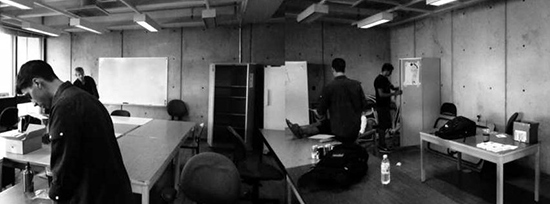
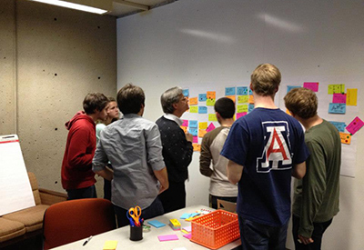
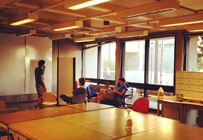

University Innovation Fellow Jared Karp shares how he and his peers founded the Design Engineering Collaborative at UC Berkeley.

Jared Karp (left) working at the Design Engineering Collaborative at UC Berkeley
By Michael Tantum, University Innovation Fellow, Wake Forest University
Full article available at universityinnovation.org
Creating a new design or innovation space on campus may seem like a daunting task. Space creation involves manpower, money, hours of time, and a zealous passion for making an impact on campus. Instead of talking about a blueprint of how to build an on campus innovation space, it is important to understand exactly what it means to bring a design and innovation space to campus. Why and how this space can be used to empower students to generate their own vision and execute their own ideas?
University Innovation Fellow Jared Karp, who co-founded the Design Engineering Collaborative, responded to these questions, discussing how to really transform a design and innovation space from an idea into a reality. During the interview, Jared gave many interesting tips on helping to start up an innovation space. However, talking to him also showed that creating an innovation space is much more than fitting a set model into a new campus. The action of creating this space takes entrepreneurial spirit itself! Nevertheless, the enormous positive impact an innovative space can have on student entrepreneurs was quickly realized. The goal of this space is not only to ideate, tinker and network but also to inspire a new generation of entrepreneurs. Through this how to guide, you should gain a sense of not just what is going on within this space and how to built it, but WHY it is absolutely necessary for your campus.

Dennis Boyle of IDEO leads as session at the Design Engineering Collaborative
Needs and Goals
The need for this type of space comes from students wanting to collaborate and work together in a forward thinking, creative and innovative environment. On-campus innovation space creates a place where students can aggregate around the common interest of being curious or passionate about an idea. Many campuses, especially Wake Forest University, have a number of entrepreneurs; however, they have minimal interaction with each other. This is where the need fills an important gap. Bringing these students together creates a supportive environment allowing team formation, the collection of resources and campus-wide networking.
Students have the ability to motivate each other and push through set backs throughout the ideation process. The need that an innovation space fundamentally fills is that of a collaborative work environment for students. To access this need, surveys or questionnaires developed for students can be implemented, even focus groups or interviews. Simultaneously, student leaders can see the growing need and attempt to tackle the challenge of implementing an on-campus innovation space.
The goal of building an on-campus innovation space is to fulfill a vision of student entrepreneurs working together from across many disciplines to solve common problems. Building a physical space also gives student entrepreneurs a location, face and identity on-campus, which can be lost in the mix of other influential organizations. An additional goal is to allow students to think and work outside the classroom. This real life hands on experience is invaluable for student entrepreneurs entering into post graduation life.

The Design Engineering Collaborative
Academic Permission
Academic permission is the tough part of creating an on-campus innovation space. It is also difficult to write an exact how-to guide on this because each campus has a different process and approval steps.
While interviewing Jared, he identified ways to overcome this hurdle. Jared first stated that you should find the person who can say yes. By this, he means that universities are filled with people who will love your idea and tell you to reach for the stars; however, very few of them have the authority to sign off and say, "YES!" It is important to find this person, or find someone who can introduce you to this person.
Jared also suggests to be prepared for your first conversation or meeting with all the materials you would need to show that an on-campus innovation space is NEEDED and it is VIABLE. These are key points that anyone will want to know before signing off on this endeavor. Hard evidence, like your market research and cost analysis, will go a long way towards a signature. Furthermore, you must emanate a feeling of infectious excitement, enthusiasm and passion for what you are doing/about to do. Your passion needs to be contagious, making most people unable to say "No."
Lastly, as Jared says, "Do everything with a smile." If you are passionate about changing your campus, making an impact and have a vision, then you definitely have something to smile about.
Read the full article at universityinnovation.org for details on:
Support
Location
Activities
Materials
Management
Launch
Lessons and Tips